Home / MLT / Week 10 / Real questions
MLT week 10 - real exam questions
33 questions pulled from past papers whose wording matches this week's topics, newest first, duplicates removed. Pick your answers, then press Check answers. Figures and answer keys are the originals.
Elapsed 00:00
Which of the following statements correctly distinguishes the hard-margin SVM from the soft-margin SVM?
- The hard-margin SVM has a feasible solution only when the training data is linearly separable, whereas the soft-margin SVM always has a feasible solution.
- The hard-margin SVM allows some training points to violate the margin, whereas the soft-margin SVM forbids all margin violations.
- Increasing the regularisation parameter
 in the soft-margin SVM makes it behave less like the hard-margin SVM.
in the soft-margin SVM makes it behave less like the hard-margin SVM. - Unlike the hard-margin SVM, the soft-margin SVM can only be used with non- linear kernels.
Given a linearly separable dataset with margin  and radius
and radius
 , which of the following statements about the perceptron algorithm are true?
, which of the following statements about the perceptron algorithm are true?
and radius
, which of the following statements about the perceptron algorithm are true?- At a misclassified point
 , a single application of the update rule is guaranteed to classify correctly immediately after that step.
, a single application of the update rule is guaranteed to classify correctly immediately after that step. - For any linearly separable data with margin
 , the perceptron always converges to one unique separating hyperplane, independent of the order in which misclassified points are presented.
, the perceptron always converges to one unique separating hyperplane, independent of the order in which misclassified points are presented. - Let
 (points in
(points in  ,
,  examples) and
examples) and  (points in
(points in  ,
,  examples) be two linearly separable datasets with
examples) be two linearly separable datasets with  and
and  . The perceptron's worst-case mistake count is always larger for than for .
. The perceptron's worst-case mistake count is always larger for than for . - None of these.
Consider a soft-margin SVM in  with
with  and
and  . Two of the training points strictly violate the margin constraint, these two points are
. Two of the training points strictly violate the margin constraint, these two points are  with
with  , and
, and  with
with  . All other points lie strictly beyond the margin. Compute the perpendicular distance between the margin hyperplanes
. All other points lie strictly beyond the margin. Compute the perpendicular distance between the margin hyperplanes  and
and  . (Round to
. (Round to  decimal places.)
decimal places.)
with and . Two of the training points strictly violate the margin constraint, these two points are with , and with . All other points lie strictly beyond the margin. Compute the perpendicular distance between the margin hyperplanes and . (Round to decimal places.)The figure below shows the training points of a soft-margin SVM in , together with its decision boundary  and its two margin hyperplanes and (dashed). Each point is marked with its true label,
and its two margin hyperplanes and (dashed). Each point is marked with its true label,  or
or  . For how many points is it possible that
. For how many points is it possible that  lie in the range
lie in the range  ? (Enter
? (Enter  if it cannot be determined from the figure.)
if it cannot be determined from the figure.)

, together with its decision boundary and its two margin hyperplanes and (dashed). Each point is marked with its true label, or . For how many points is it possible that lie in the range ? (Enter if it cannot be determined from the figure.)


Consider a dataset with six datapoints  , with labels
, with labels  and
and  . A hard-margin linear SVM is trained on this dataset. Which ONE of the following sets is a possible set of support vectors?
. A hard-margin linear SVM is trained on this dataset. Which ONE of the following sets is a possible set of support vectors?
, with labels and . A hard-margin linear SVM is trained on this dataset. Which ONE of the following sets is a possible set of support vectors?


Consider a binary classification problem in with positive examples  and negative examples
and negative examples  . Apply the feature map
. Apply the feature map  and a linear model
and a linear model  . Which of the following weight vectors
. Which of the following weight vectors  gives a maximum-margin decision surface separating the two classes?
gives a maximum-margin decision surface separating the two classes?
with positive examples and negative examples . Apply the feature map and a linear model . Which of the following weight vectors gives a maximum-margin decision surface separating the two classes?


Consider binary classification on input features  . Define the decision boundary of a trained classifier as the set of points at which its predicted label changes. For which of the following method(s) can this decision boundary be non-linear in ?
. Define the decision boundary of a trained classifier as the set of points at which its predicted label changes. For which of the following method(s) can this decision boundary be non-linear in ?
. Define the decision boundary of a trained classifier as the set of points at which its predicted label changes. For which of the following method(s) can this decision boundary be non-linear in ?- Perceptron.
- Logistic regression, predicting the positive class when
 .
.  -nearest-neighbour with Euclidean distance.
-nearest-neighbour with Euclidean distance.- A decision tree using axis-aligned splits.
- Gaussian Naïve Bayes in which the class-conditional feature variances differ between the two classes.
- A support vector machine with a linear kernel.
- A support vector machine with an RBF (Gaussian) kernel.
Consider the effect of each operation below on a model's bias and variance. Which of the following statements are correct?
- Regularising the weights in a linear/logistic regression model increases bias and decreases variance.
- Increasing the maximum depth of a decision tree increases bias and decreases variance.
- Increasing the number of hidden units in a neural network decreases bias and increases variance.
- Removing all the non-support-vectors from the training set of an SVM leaves both bias and variance unchanged.
Consider a scenario where we use leave-one-out cross-validation (LOOCV) with a Support Vector Machine (SVM) for binary classification. Given a dataset  , the cross- validation error for a sample
, the cross- validation error for a sample  is
is  if
if  and
and  otherwise, where
otherwise, where  is the prediction for
is the prediction for  produced by the SVM trained on
produced by the SVM trained on  . The overall cross-validation error is
. The overall cross-validation error is
 . Let
. Let  be the number of support vectors obtained by training on the full dataset
be the number of support vectors obtained by training on the full dataset  . Which statement is true regarding the relationship between
. Which statement is true regarding the relationship between  and ?
and ?
, the cross- validation error for a sample is if and otherwise, where is the prediction for produced by the SVM trained on . The overall cross-validation error is
. Let be the number of support vectors obtained by training on the full dataset . Which statement is true regarding the relationship between and ?


- is independent of
For an optimal soft-margin SVM solution (no bias term), a training point satisfies  . Here
. Here  denotes the slack variable for this point, and
denotes the slack variable for this point, and  is the Lagrange multiplier on the constraint
is the Lagrange multiplier on the constraint  . Which statement is necessarily true?
. Which statement is necessarily true?
. Here denotes the slack variable for this point, and is the Lagrange multiplier on the constraint . Which statement is necessarily true?- The point is misclassified by
 .
.  .
. and
and  .
. .
.
Consider a GMM with components.During the E-step for a single data point , you are given only the following two quantities for the first component:  where
where  is the prior mixing weight and
is the prior mixing weight and  is the posterior responsibility. All other component parameters and densities are unknown. Based strictly on these two values and the mathematical definition of the E-step responsibility,
is the posterior responsibility. All other component parameters and densities are unknown. Based strictly on these two values and the mathematical definition of the E-step responsibility,
 which of the following quantities can be uniquely determined as exact numerical values?
which of the following quantities can be uniquely determined as exact numerical values?
components.During the E-step for a single data point , you are given only the following two quantities for the first component: where is the prior mixing weight and is the posterior responsibility. All other component parameters and densities are unknown. Based strictly on these two values and the mathematical definition of the E-step responsibility,
which of the following quantities can be uniquely determined as exact numerical values?- The marginal probability density of the data point,
 .
. - The ratio of the conditional density to the marginal density for component : .

- The ratio of the joint probability of component to the sum of joint probabilities of all other components: .

- The sum of posterior responsibilities for all components other than component :

Consider a dataset for a binary classification problem with features in  as shown in the figure. The red points belong to class
as shown in the figure. The red points belong to class  while the green points belong to class
while the green points belong to class  . Which of the following classifiers is the most appropriate choice?
. Which of the following classifiers is the most appropriate choice?

as shown in the figure. The red points belong to class while the green points belong to class . Which of the following classifiers is the most appropriate choice?
- Hard-margin, Linear SVM
- Hard-margin, Kernel SVM, with a suitable kernel
- Soft-margin, Linear SVM
- Soft-margin, Kernel SVM, with a suitable kernel
Two loss functions are plotted in this graph. What are the two?
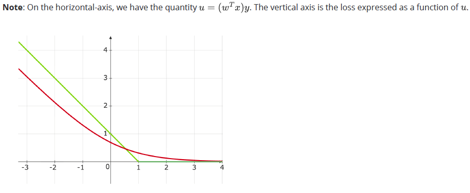
- Logistic loss
- Hinge loss
- Squared loss
- 0-1 loss
Consider a dataset with two data-points for a binary classification problem with features in .  is a data-point from the positive class while
is a data-point from the positive class while  is from the negative class. We now consider three linear classifiers: perceptron, logistic regression and SVM.
is from the negative class. We now consider three linear classifiers: perceptron, logistic regression and SVM.
 If
If  is the weight vector with the largest margin, which of the following is true?
is the weight vector with the largest margin, which of the following is true?

. is a data-point from the positive class while is from the negative class. We now consider three linear classifiers: perceptron, logistic regression and SVM.
If is the weight vector with the largest margin, which of the following is true?
- All three classifiers output

- Only SVM outputs
- Only SVM and perceptron output
- Only perceptron and logistic regression output
Consider a binary classification dataset in  that is linearly separable. Suppose there exist two distinct weight vectors
that is linearly separable. Suppose there exist two distinct weight vectors
that is linearly separable. Suppose there exist two distinct weight vectors 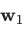
and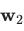
that both correctly classify all training points with a positive margin. The Perceptron algorithm is applied to this dataset. Which of the following statements are correct? (Select all that apply.)- The Perceptron algorithm is guaranteed to converge to .
- The final weight vector obtained by the Perceptron algorithm depends on the initialization and the order in which the data points are presented.
- The Perceptron algorithm is guaranteed to converge to some separating hyperplane in a finite number of updates.
- The Perceptron algorithm always converges to the maximum margin separator among all possible separating hyperplanes.
Consider a hard-margin SVM trained on a linearly separable dataset. The optimal Lagrange multipliers are  or The prediction for a test point is given by
or The prediction for a test point is given by
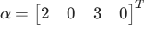
. The training dataset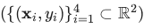
is given by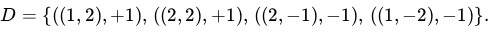
Given the test point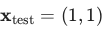
, determine the predicted label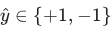
. Enter the answer as either or The prediction for a test point is given by 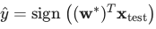
Comprehension passage for this question
Consider the following soft-margin Support Vector Machine (SVM) classifier. The solid line represents the decision boundary 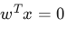
, and the dotted lines represent the margin boundaries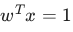
and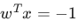
. Red points correspond to the negative class, and green points correspond to the positive class.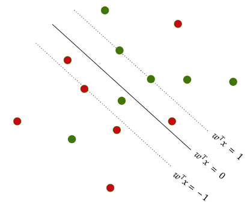
Based on the above data, answer the given subquestions.How many datapoints will incur a penalty (i.e., have non-zero slack variables
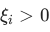
)?Comprehension passage for this question
Consider the following soft-margin Support Vector Machine (SVM) classifier. The solid line represents the decision boundary , and the dotted lines represent the margin boundaries and . Red points correspond to the negative class, and green points correspond to the positive class.
Based on the above data, answer the given subquestions.How many datapoints will definitely have
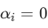
in the dual formulation of SVM?Consider the datapoints and . A hard margin SVM is applied on this dataset. Which of the following is the decision boundary for the above dataset?
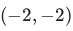
with label and 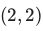
with label . A hard margin SVM is applied on this dataset. Which of the following is the decision boundary for the above dataset?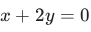
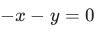
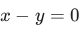
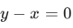
Consider an SVM classifier with separating hyperplane defined by  , where the weight vector is
, where the weight vector is  . Compute the perpendicular distance from the point
. Compute the perpendicular distance from the point  to the hyperplane. Enter your answer correct to three decimal places.
to the hyperplane. Enter your answer correct to three decimal places.
, where the weight vector is . Compute the perpendicular distance from the point to the hyperplane. Enter your answer correct to three decimal places.Given a two-dimensional data set where points from class 1 are: {(−2, 3), (−1, 1)} and points from class 0 are: {(1, 3), (1, 4)}. Which of the following statements are true?
- The given data points from classes 1 and 0 can be linearly separated using ahard-margin SVM.
- A perceptron model and a hard-margin SVM can give different decisionboundary for this dataset.
- A soft-margin SVM would be a more robust choice than a hard-margin SVM forthis dataset as the dataset is not linearly separable.
- The width of the separation between the two supporting hyperplanes is 4.
Comprehension passage for this question
Based on the above data, answer the given subquestions.

Which of the following training data points are certainly not support vectors?


If we remove all the non-support vectors from the dataset, what will be the impact on the model using SVM algorithm?
- Model will overfit.
- The model will not be changed.
- Model will underfit.
- Accuracy of the model will increase.

- The dataset is linearly separable with a positive margin.
- The perceptron algorithm will terminate after a finite number of iterationswhen trained on this dataset.
- The dataset is linearly separable, but the margin may be zero.
- The dataset is not linearly separable.
Comprehension passage for this question
Based on the above data, answer the given subquestions.

If a soft-margin SVM is trained on this dataset, the optimal weight vector it returns will be the same as the one returned by a hard-margin SVM, irrespective of the value of the hyperparameter C.
- TRUE
- FALSE

- The dataset is linearly separable with a positive margin.
- The perceptron algorithm will terminate after a finite number of iterationswhen trained on this dataset.
- The dataset is linearly separable, but the margin may be zero.
- The dataset is not linearly separable.
Comprehension passage for this question
Based on the above data, answer the given subquestions.

Enter the number corresponding to the (SVM) hinge loss.
Consider the following dataset on which the soft margin SVM is applied.
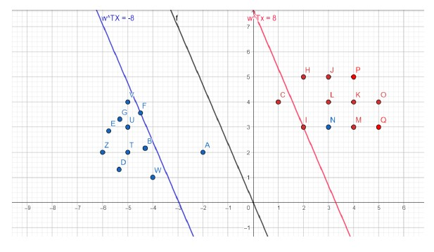
Consider the following dataset on which the soft margin SVM is applied. Which of the following statements is/are true about this dataset?- Points {F, A, C, I} are the only support vectors.
- Points {A, N} are a subset of support vectors.
- Points {F, A, N} are a subset of support vectors.
- Points except {F, A, C, I, N} do not play any role in determining optimal weightvector.
- Points except {F, A, C, I} do not play any role in determining optimal weightvector.

- Points {F, I} are the only support vectors.
- Points {A, N} are a subset of support vectors.
- Points {F, A, C, I} are the only support vectors.
- Points except {F, A, C, I, N} do not play any role in determining optimal weightvector.
- Points except {F, A, C, I} do not play any role in determining optimal weightvector.

- The given data points from classes A and B can be linearly separated using aHard-margin SVM.
- Points (2, 2) from class 1 and (3, 3) from class 0 will be on the decisionboundary or support vectors.
- A Soft-margin SVM would be a more robust choice than a Hard-margin SVM forthis dataset as the dataset is not linearly separable.
- A perceptron model and a hard margin SVM will always give the same decisionboundary for this dataset.

- w shown in this diagram is the optimal weight vector for a hard-margin, linear-SVM
- w shown in this diagram is not the optimal weight vector for a hard-margin,linear-SVM
Which of the following could be the decision boundary learned by a hard-margin SVM? Choose the most appropriate option. NOTE: The dataset is the same for all four options.


Consider a binary classification task that has 2 features. Assume that we train a soft-margin, linear SVM (decision boundary is a line in 2D space). We know nothing about the distribution of points in the training set. The points need not be linearly separable. This model is now tested on the following dataset that has four points.
 Consider a binary classification task that has 2 features. Assume that we train a soft-margin, linear SVM (decision boundary is a line in 2D space). We know nothing about the distribution of points in the training set. The points need not be linearly separable. This model is now tested on the following dataset that has four points. What are the possible values of the accuracy of the model? All options are independent of each other. Assume that the decision boundary of the model does not pass through any one of the four points.
Consider a binary classification task that has 2 features. Assume that we train a soft-margin, linear SVM (decision boundary is a line in 2D space). We know nothing about the distribution of points in the training set. The points need not be linearly separable. This model is now tested on the following dataset that has four points. What are the possible values of the accuracy of the model? All options are independent of each other. Assume that the decision boundary of the model does not pass through any one of the four points.
Consider a binary classification task that has 2 features. Assume that we train a soft-margin, linear SVM (decision boundary is a line in 2D space). We know nothing about the distribution of points in the training set. The points need not be linearly separable. This model is now tested on the following dataset that has four points. What are the possible values of the accuracy of the model? All options are independent of each other. Assume that the decision boundary of the model does not pass through any one of the four points.- 0
- 0.25
- 0.5
- 0.75
- 1